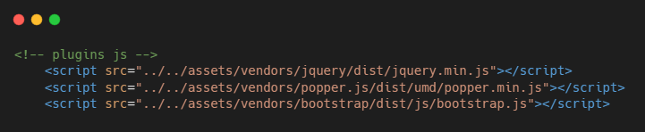

Tema 6 Escribiendo Código
Aunque aún no comenzamos a escribir código, es importante que tengas en cuenta algunas recomendaciones para cuando llegue el momento de codificar. Para cada lenguaje se deben seguir reglas especifícas, pero también existen prácticas comunes adicionales que, aunque no afectan el funcionamiento del programa o aplicación, se utilizan para facilitar la lectura y comprensión de nuestro código. Es muy importante considerar estas prácticas para que nuestro código sea fácil de leer y entender, ya sea por nosotros mismos o por otras personas con quienes estés colaborando en un proyecto.
Escribir Comentarios
Los comentarios son secciones de código que son ignoradas por las computadoras. Se utilizan para describir lo que hace cierta parte del código y son muy importantes para ayudar a otros desarrolladores (o incluso a uno mismo) a comprender lo que hemos escrito.

El comentario en este caso está en color verde, y nos indica que las líneas de código de abajo son plugins de JavaScript.
Indentación
Podemos llegar a tener código muy extenso y lleno de diferentes elementos dentro de otros elementos. Al tratar de leer el código, puede resultar confuso distinguir qué elementos pertenecen a otros, y es por esto por lo que se utiliza la indentación: la indentación es el uso de espacios o tabuladores para indicar el nivel jerárquico al que pertenece cada sección del código.
<div class="mrg-top-20"><div class="title"><h1 class="bold">Bienvenido</h1><p>¡Hola mundo!</p></div></div>
Las dos versiones del código despliegan exactamente el mismo resultado en un navegador; sin embargo, para un desarrollador, la versión con indentación es mucho más legible, porque de un vistazo se ve qué elementos están dentro de otros.